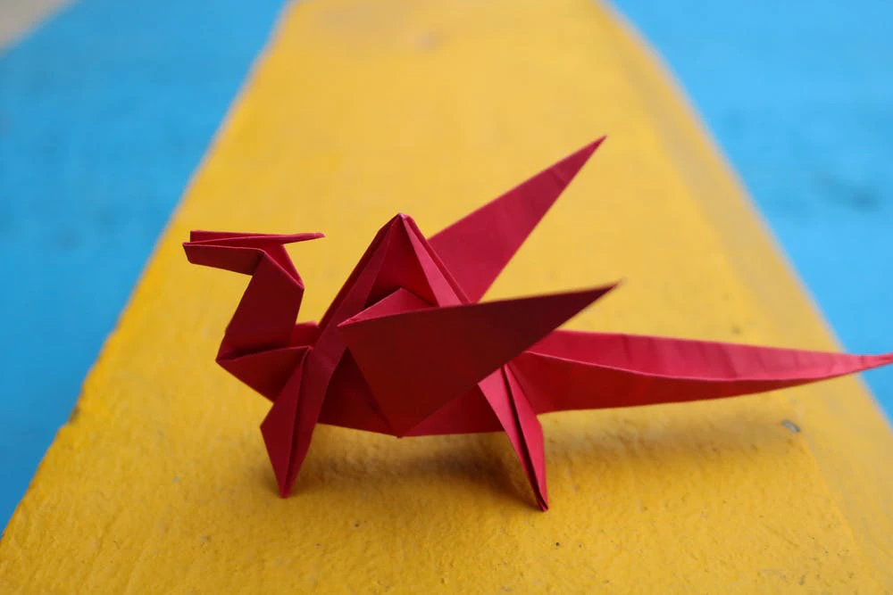

I am Mandar Nagesh Swami. I am from Latur,Maharashtra. I am pursuing B.Tech in Computer Science and Engineering
at IIT Goa.
My Hobbies are:
| Year of graduation | Degree | Institution |
|---|---|---|
| 2024 | B.Tech | Indian Institute of Technology Goa |
| 2018 | 12th standard | Narayana college |
| 2016 | 10th standard | Sant Tukaram NM School |
You might have a bad taste in your mouth from when your middle school English teacher made you keep a journal, but it’s actually quite therapeutic. Bullet journaling and hand lettering has turned keeping a journal into a functional work of art, and there are all kinds of tutorials on how to journal the most effectively.
Gardening is the perfect hobby to enjoy more fresh air and to grow your own produce. All it takes to start is an inexpensive pack of seeds, fertilizer, soil, and basic gardening tools. If you’re new to gardening, growing some herbs or even just flowers is a pretty good starting point.
Playing an instrument is one of the best hobby examples because it is relaxing and can bring you and others joy. Masterclass has courses for singing, ukulele, guitar, production, mixing, drumming, violin, and composing from people like Itzhak Perlman, Danny Elfman, and Christina Aguilera, but you can always make up your own music like internet sensation Abby the Spoon Lady.
If you’ve never heard of Origami, it’s the traditional Japanese art of paper folding. You can make animals, plants, and other nature-inspired folds taking help YouTube and How to Make Origami app. Origami is both creative and fun, and it also helps with hand-eye coordination.
